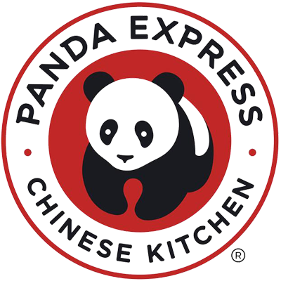

Western Allied Mechanical – Project Engineering Intern

With a strong interest in heat transfer and fluid dynamics, I sought out an internship that would allow me to apply these concepts in real world settings. While I had initially leaned toward aerospace engineering, a conversation with an HVAC professional helped me realize that the HVAC industry offered many of the same technical challenges—especially in airflow, energy systems, and thermal control—within a practical and fast paced environment.
As a Project Engineering Intern at Western Allied Mechanical, I supported over ten active HVAC projects, primarily in high stakes environments such as hospitals and laboratories. This experience gave me insight into both the engineering and business aspects of project delivery, and it clarified my passion for the technical side of engineering.
- Assisted in reviewing and redlining mechanical plans, saving the project team over 30 hours/week by identifying early discrepancies and clarifying installation requirements.
- Conducted weekly job site audits on projects valued between $2–3 million, checking for compliance with mechanical specs, code, and installation quality.
- Collaborated with engineers to redesign and recreate mechanical drawings, preventing an estimated $50,000 in potential rework due to coordination clashes or design gaps.
- Streamlined processes for RFIs (Requests for Information) and submittals, and managed procurement logs, helping maintain on time material delivery and project alignment.
Throughout the internship, I found myself drawn to understanding how the systems worked—from airflow routing to energy efficiency design choices. While I appreciated the exposure to business and management, it was the mechanical problem solving that confirmed my desire to pursue a career grounded in engineering fundamentals.
Target – Guest Advocate
Although I only worked at Target for two months, it was a valuable job that introduced me to the importance of self-management in a solo work environment. I was responsible for independently operating my cash register, assisting customers, managing my breaks, and maintaining punctuality—all without direct supervision. This experience taught me a great deal about accountability and reliability.
I maintained perfect register accuracy throughout my time there, with no discrepancies or concerns raised by management. Initially I had chosen to work there because I knew it would be easier for me to get hired at a Target near UCSB if I had previously worked there, but ultimately I chose to focus on my transition into college. The role, however, laid a strong foundation for my work ethic and time management skills.
Panda Express – Person In Charge / Front of House
I began working at Panda Express during my junior year of high school, and over the course of nine months, I progressed from a Front of House assistant to being promoted to Person in Charge, a role typically held by older, more experienced staff.
Starting with basic responsibilities like taking orders, I quickly gained the trust of management and took on greater responsibilities, including closing the store independently, handling end-of-day finances, leading the closing team, supporting kitchen operations, and holding team members accountable for register discrepancies.
I earned two raises during my time there, reflecting my strong work ethic and leadership. I eventually chose to leave the position to focus on AP exams and completing my senior year, but the experience gave me a deep appreciation for teamwork, accountability, and growth in a fast paced environment.